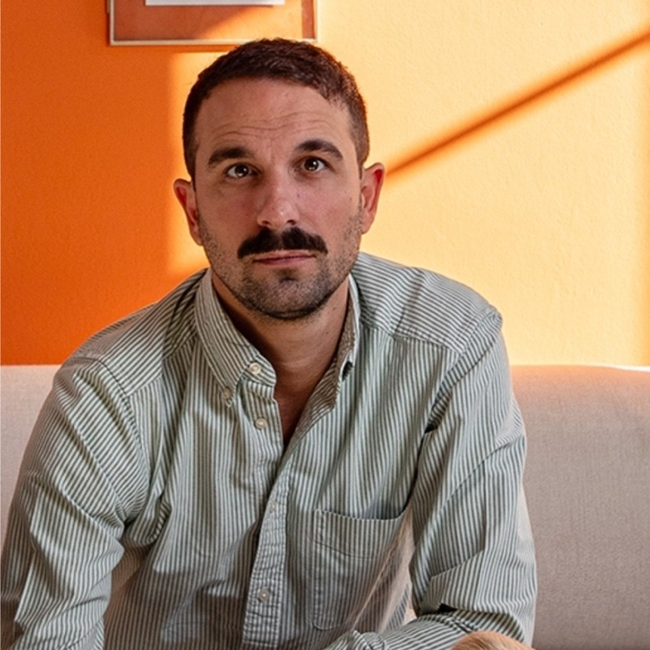

Expertise IA de pointe · Excellence opérationnelle
Le bon système IA,
livré.
On audite, on priorise et on construit les agents et outils internes qui tournent en production. Propriété transférée à 100%.
Le constat
Le succès se joue avant la première ligne de code.
Les métiers listent des cas d'usage, mais personne ne note valeur, faisabilité et risque.
Les sources existent, mais accès, formats, droits et conformité bloquent la mise en œuvre.
Des systèmes livrés sans le code, sans la documentation, sans les accès.
Ce qu'on livre
Quatre portes d'entrée, un système livré.
Diagnostic & feuille de route
Cartographie des processus, notation valeur / faisabilité / risque, plan de construction.
Données & conformité
Inventaire des sources, matrice des droits et accès, architecture cible en Europe.
IA & outils internes
Agents IA, tableaux de bord métier, connecteurs et interfaces internes.
Adoption & exploitation
Suivi coût et qualité, formation, exploitation et transfert de propriété.
La méthode
Comprendre, prioriser,
construire, transférer.
Cartographie des processus et des cas d'usage.
Notation valeur / risque, sécurisation des données.
Architecture, développement et intégration par cas.
Mise en production, suivi et formation.
Documentation, gouvernance et propriété à 100%.
Feuille de route & impact
Du diagnostic à la production, par vagues.
Diagnostic de maturité
Avant → après
Priorisation
On démarre par le système le plus utile.
Chaque cas d'usage est noté sur la valeur, l'effort et le risque.
On lance celui qui crée de la valeur le plus vite, pas le plus impressionnant. Puis on étend.
Cas clients livrés
Des systèmes livrés,
des résultats mesurés.
Société de services, 200+ personnes. Génération depuis ERP et Excel, contrôles d'intégrité.
Acteur de la mobilité. Base documentaire branchée à Slack, recherche manuelle supprimée.
Grand compte financier. Audit complet, cas priorisés, architecture et feuille de route 18 mois.
Notre différence
Pas un cabinet de conseil. Un système livré.
L'équipe
Des ingénieurs qui livrent en production.
Architecture, agents IA et mise en production.

Stratégie et relation grands comptes.
Cadrage métier, livraison et opérations.
Le parcours
Trois façons de démarrer.
Audit Flash
Diagnostic express, 30 min, sans engagement. On lit votre contexte et vos contraintes.
Schéma directeur IA
Cadrage, cas d'usage priorisés, architecture cible et feuille de route de déploiement.
Mise en production
Construction, intégration, formation, transfert et exploitation. Propriété 100% client.
Prochaine étape
Choisissez le premier
système utile.
En 30 minutes, on lit votre contexte, vos processus et vos contraintes. Vous savez si un audit IA mérite d'être lancé.